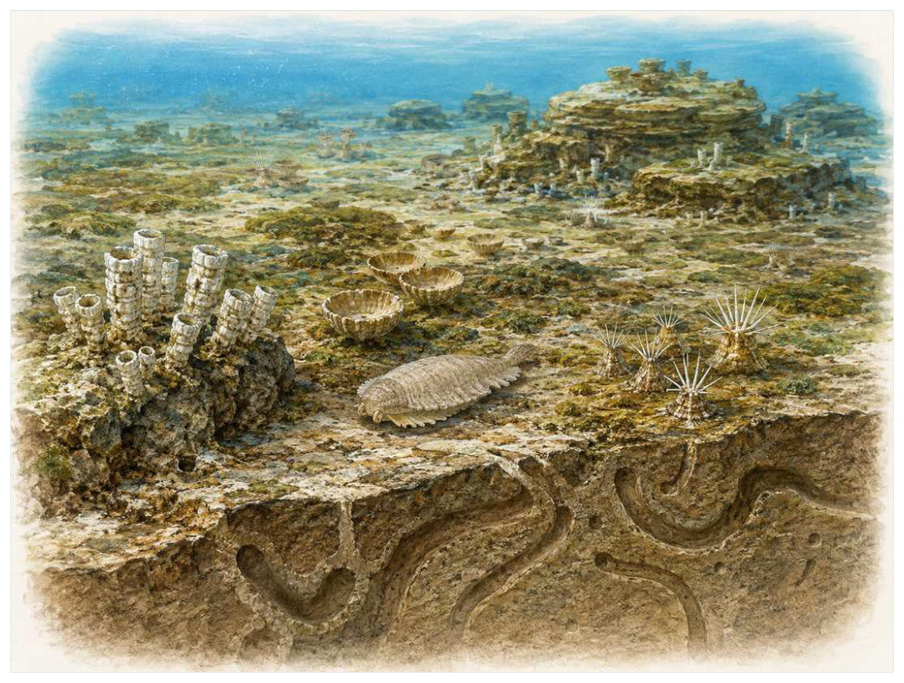

第03篇 · 埃迪卡拉纪：陌生的复杂生命 · 第 9 章
骨骼、掘穴与埃迪卡拉世界的终场
本篇主题:埃迪卡拉纪：陌生的复杂生命
在动物身体方案尚未定型之前，海底出现的巨大而难以分类的生命。

本章科学复原配图 （用于呈现结构与生态关系, 不替代化石照片、测量数据与系统发育证据。）
生命史推进到约5.5亿至5.39亿年前时，旧支系仍在延续，新结构也开始改变竞争规则。埃迪卡拉末期出现更多管状骨骼、钻孔和复杂痕迹化石。动物开始更深入地搅动沉积物，破坏连续微生物席；捕食压力促使防护和逃避策略增加。环境氧化变化也可能参与生态重组，但埃迪卡拉生物群的衰退不能简化成一种原因。
进入这个时代
若真正置身其中，首先感受到的是介质本身：水是否含氧、地面是否稳定、空气是否干燥、植被是否遮挡视线。身体结构只有放在这些条件中才有意义。曾经平整的席状海底被洞穴、爬迹和取食沟槽切开。小型管状生物在礁体或沉积表面密集生长，某些壳上出现规则孔洞，提示捕食者已经能够穿透防护结构。
在“骨骼、掘穴与埃迪卡拉世界的终场”所覆盖的时间里，不能把地理与气候当作固定背景。海陆位置、海平面、河流或植被结构会改变资源可达性，同一性状在不同地区可能得到完全相反的选择结果。
以骨骼、掘穴与埃迪卡拉世界的终场为例，环境变化首先作用于生理边界。温度改变酶反应和耗氧量，氧气决定持续活动余量，酸碱度影响骨骼和外壳材料，水分则限制气体交换与胚胎发育。只有跨过这些底层约束，捕食和竞争才有机会决定谁占优势。 在本章中，这一约束具体落在“生物扰动让氧和营养进入沉积物深部”这条关系上。
再从约5.5亿至5.39亿年前的时间尺度看，身体结构总有材料和发育成本。硬壳提高防护却使生长和运动更昂贵，长颈扩大取食范围却增加支撑与供血问题，高代谢提高持续活动也提高食物需求。所谓成功设计从来是特定环境中的权衡。 它与“生物矿化”共同决定了后续变化可以沿哪些路径发生。
生态系统如何运转
“生物扰动让氧和营养进入沉积物深部”体现了生态系统的反馈性。一方结构或行为稍有改变，另一方的防御、逃避、繁殖和空间选择就会重新排列，长期累积后才形成宏观演化差异。
围绕“生物扰动让氧和营养进入沉积物深部”，从演化树看，相似关系可能在远亲中反复出现。功能相近不必意味着近缘，而同一祖先结构也可能被后代改作完全不同的用途；生态解释必须与系统发育互相校验。 对骨骼、掘穴与埃迪卡拉世界的终场而言，这一后果还会与“硬壳提高防御却增加建造成本”相互放大或抵消。
在约5.5亿至5.39亿年前，“硬壳提高防御却增加建造成本”把环境条件转化为生物之间的差异。相同气候并不会平均影响所有支系，因为它们利用的食物、水层、底质和繁殖地点并不相同。
围绕“硬壳提高防御却增加建造成本”，当环境快速越过生理阈值时，原有互动甚至来不及通过适应重新平衡。此时灭绝的选择性会更多取决于分布、食物来源和繁殖速度，而不是平时竞争中的相对强弱。 对骨骼、掘穴与埃迪卡拉世界的终场而言，这一后果还会与“捕食、竞争和环境波动共同缩短稳定席面生态的寿命”相互放大或抵消。
本章的一条关键关系是“捕食、竞争和环境波动共同缩短稳定席面生态的寿命”。它首先改变资源在个体之间的分配：能更早发现、处理或占据资源的种群获得收益，而另一方会承受新的选择压力。
围绕“捕食、竞争和环境波动共同缩短稳定席面生态的寿命”，这种关系没有永恒赢家。收益随密度和环境改变：防御越常见，攻击专门化的价值越高；资源越稀少，维持昂贵结构的代价越大。化石记录中的扩张与衰退，常是这种动态平衡被外部事件打破的结果。 对骨骼、掘穴与埃迪卡拉世界的终场而言，这一后果还会与“生物扰动让氧和营养进入沉积物深部”相互放大或抵消。
关键演化创新
在“骨骼、掘穴与埃迪卡拉世界的终场”中，围绕“生物矿化”，“生物矿化”没有把生物推向更高级层级，而是重新划分可利用资源。它让某些水层、食物尺寸、活动时间或繁殖地点变得可行，同时也带来能量、材料和发育控制成本。 它首先需要在约5.5亿至5.39亿年前的生态条件下产生可测量收益。
就“生物矿化”而言，研究者通过近缘支系比较、发育同源、关节活动、微观组织和出现顺序重建这条路径。真正有价值的过渡化石不是“半成品”，而是证明中间组合可以独立生活。 本章把它与“深层掘穴”并列，是为了显示复杂性状往往依赖多部分协同。
在“骨骼、掘穴与埃迪卡拉世界的终场”中，围绕“深层掘穴”，“深层掘穴”一旦出现，还会改变其他物种的环境。新的捕食方式、取食高度或繁殖场所会制造选择压力，促使整个群落而不只是发明者发生响应。 它首先需要在约5.5亿至5.39亿年前的生态条件下产生可测量收益。
就“深层掘穴”而言，它的成功具有条件性。环境稳定时，专门化可提高效率；危机到来时，同一专门化可能限制食物和栖息地选择。演化创新因此既能开启辐射，也能制造新的脆弱性。 本章把它与“捕食与防御升级”并列，是为了显示复杂性状往往依赖多部分协同。
在“骨骼、掘穴与埃迪卡拉世界的终场”中，围绕“捕食与防御升级”，“捕食与防御升级”没有把生物推向更高级层级，而是重新划分可利用资源。它让某些水层、食物尺寸、活动时间或繁殖地点变得可行，同时也带来能量、材料和发育控制成本。它首先需要在约5.5亿至5.39亿年前的生态条件下产生可测量收益。
就“捕食与防御升级”而言，这一变化还可能在多个支系中独立发生。若功能相似而解剖来源不同，就是趋同；若结构来自共同祖先但功能改变，则属于同源结构的分化。二者不能仅靠外观判断。 本章把它与“生物矿化”并列，是为了显示复杂性状往往依赖多部分协同。
生命群像：把物种放回生态网络
克劳德管虫（Cloudina）
克劳德管虫（Cloudina）生活在约5.5亿至5.39亿年前，已知体型约为毫米至厘米级叠套管。它在群落中的角色可概括为附着或躺卧于浅海底的早期骨骼生物。最值得观察的结构是钙质管和钻孔是生物矿化与捕食互动的经典证据。这些结构不是为了后来时代而准备，而是在当时直接影响摄食、运动、防御或繁殖。
对克劳德管虫而言，把它放回群落后，结构的意义更清楚。食物并不会平均分布，水深、植被高度、底质和季节把资源切成小块；它的身体让其中一部分资源可被利用，也使它与近缘种错开生态位。种群命运还取决于幼体能否成长、繁殖地点是否稳定以及灾害后是否仍有避难所。 这使“钙质管和钻孔是生物矿化与捕食互动的经典证据”不能脱离其附着或躺卧于浅海底的早期骨骼生物角色来理解。
关于它的直接依据是：其动物亲缘位置和生活姿态存在多种解释。研究者还必须确认骨骼是否属于同一个体、是否被水流搬运、压扁是否改变比例，以及不同大小是否只是成长阶段。只有解剖、地层和功能证据相互一致，复原才可上调为高可信。
由克劳德管虫这个案例看，它在生命史中的价值不在于离现代形态还有多远，而在于证明这一身体组合曾真实可行。即使没有直系后代，支系也可能在当时持续繁盛，并通过捕食、植食或栖息地工程改变其他生命的选择环境。 它在约5.5亿至5.39亿年前留下的记录，因此同时是第9章所讨论的形态史和生态史的一部分。
纳马卡拉虫（Namacalathus）
在这一章的生命群像里，纳马卡拉虫（Namacalathus）不能只当作图鉴名称。它出现于见本章时代范围，体型大约毫米至厘米级杯状，主要生活方式是礁体或硬底上的固着生物；带开口的杯体显示早期骨骼生物形态多样则说明身体怎样围绕这一生活方式进行组合。
对纳马卡拉虫而言，同域物种的存在迫使它分割时间与空间。相似牙齿不一定吃完全相同的食物，相似四肢也可能适应不同底质；微磨损、同位素和伴生群落常能揭示这种细分。环境改变时，原本减少竞争的专门化又可能成为迁移和改食的障碍。这使“带开口的杯体显示早期骨骼生物形态多样”不能脱离其礁体或硬底上的固着生物角色来理解。
现有认识建立在最初被视为独特类群，后续软组织发现支持动物关系但位置仍讨论中之上。古生物学的可信度不是来自一件戏剧化标本，而是来自多件标本、多个地点和不同方法得到相容结果。新发现若改变比例或分类，并非此前研究毫无价值，而是证据边界被重新画清。
由纳马卡拉虫这个案例看，从生态尺度看，它与本章其他成员共同维持一张网络。任何“最强”排名都会遗漏资源供应、幼体死亡、疾病和气候脉冲；真正决定长期成功的是种群能否在波动中不断完成繁殖。 它在见本章时代范围留下的记录，因此同时是第9章所讨论的形态史和生态史的一部分。
Coronacollina（Coronacollina acula）
从外形看，Coronacollina（Coronacollina acula）最容易被记住的是可能具有支撑用骨针，是骨骼组织前寒武纪记录之一。它生活在见本章时代范围，大小约厘米级中心体并有长针状结构，承担海底固着生物这一生态功能。把年代、体型和功能放在一起，才能避免把奇特形态当成无意义装饰。
对Coronacollina而言，它的成功不需要在所有性能上压倒其他物种，只需在特定资源和风险组合中留下更多后代。速度、咬合、装甲、感官与繁殖之间存在预算，某项性能极端化往往意味着另一项被牺牲。所谓“霸主”只是复杂权衡后的区域性结果。 这使“可能具有支撑用骨针，是骨骼组织前寒武纪记录之一”不能脱离其海底固着生物角色来理解。
支持该解释的材料包括身体复原依赖分离保存的印痕，功能解释仍有限。若不同证据出现冲突，应优先报告范围而不是强行给出单值。例如体长会随参照类群变化，运动能力会随软组织假设变化，系统位置也会随新增性状重新计算。
由Coronacollina这个案例看，它也展示专门化的双面性：结构在稳定环境中提高效率，却可能在气候、食物或竞争格局突变时限制转向。灭绝不是对设计的道德评分，而是性状、地理范围和偶然事件相遇后的历史结果。 它在见本章时代范围留下的记录，因此同时是第9章所讨论的形态史和生态史的一部分。
艾文斯虫（Ikaria wariootia）
艾文斯虫（Ikaria wariootia）是见本章时代范围的一名真实生态成员，而不是通往后代的抽象过渡。它约有毫米级，以浅表掘穴的双侧动物候选的方式获取资源；与Helminthoidichnites类痕迹联系，显示微小双侧动物已定向移动反映了其祖先历史与局部选择压力共同留下的结果。
对艾文斯虫而言，从种群角度看，偶发捕猎和个体伤病远不如长期繁殖率重要。广泛分布的普通个体比一具异常巨大的标本更能代表支系，然而普通个体往往较少进入公众叙事。研究者必须防止把化石收藏偏好误当成古代丰度。这使“与Helminthoidichnites类痕迹联系，显示微小双侧动物已定向移动”不能脱离其浅表掘穴的双侧动物候选角色来理解。
我们之所以能够作出上述判断，主要因为个体与痕迹的对应基于形态和空间关联，内部器官未保存。单一结构通常有多种功能解释，所以还要查看磨损、病理、肌肉附着、沉积环境和近缘比较。计算模型能排除不可能姿势，却不能自动恢复没有保存的软组织。
由艾文斯虫这个案例看，面对仍有争议的细节，负责任的复原不是停止讲述，而是标注证据等级。形态、年代和亲缘可较确定，具体姿势、叫声、求偶和群猎则按材料降级；新标本会在这些边界内继续改写认识。 它在见本章时代范围留下的记录，因此同时是第9章所讨论的形态史和生态史的一部分。
洞穴迹制造者（Treptichnus pedum tracemaker）
若把镜头从时代拉近到个体，洞穴迹制造者（Treptichnus pedum tracemaker）会首先进入视野。它生活于埃迪卡拉末至寒武纪初，体型约毫米至厘米级痕迹。作为在沉积物中反复探查取食，它依靠复杂分枝掘穴长期用于标记寒武纪底界附近的行为转折与环境和其他生物发生关系。
对洞穴迹制造者而言，把它放回群落后，结构的意义更清楚。食物并不会平均分布，水深、植被高度、底质和季节把资源切成小块；它的身体让其中一部分资源可被利用，也使它与近缘种错开生态位。种群命运还取决于幼体能否成长、繁殖地点是否稳定以及灾害后是否仍有避难所。 这使“复杂分枝掘穴长期用于标记寒武纪底界附近的行为转折”不能脱离其在沉积物中反复探查取食角色来理解。
其复原依赖制造者实体身份未知，且该痕迹在不同地区首现时间并不完全同步。年代和保存形态通常属于较强证据，体重、速度、颜色和社会行为则需要额外假设。书中把这些层次拆开，是为了让读者知道哪些可视为事实，哪些仍应等待更多材料。
由洞穴迹制造者这个案例看，它不是祖先链条上必须跨过的一格。演化树中同时存在许多近缘支系，只有少数留下后代；旁支化石同样关键，因为它们显示某组性状出现的顺序和可行范围。 它在埃迪卡拉末至寒武纪初留下的记录，因此同时是第9章所讨论的形态史和生态史的一部分。
因果链：环境、生态与性状
如果把骨骼、掘穴与埃迪卡拉世界的终场当作一次自然实验，可以追问：假如“生物扰动让氧和营养进入沉积物深部”较弱，“深层掘穴”是否仍会带来同样收益；假如“硬壳提高防御却增加建造成本”更强，克劳德管虫的钙质管和钻孔是生物矿化与捕食互动的经典证据是否反而成为负担。反事实无法直接验证，却能帮助研究者识别模型隐含的因果假设。随后再用Cloudina壳体的钻孔和破损记录捕食和痕迹化石显示行为复杂度和活动深度增加寻找可区分的预测：不同机制应在体型分布、损伤类型、沉积环境或出现顺序上留下不同痕迹。科学解释不是为现有图景编一个顺耳故事，而是让相互竞争的解释接受同一批材料检验。
“生物扰动让氧和营养进入沉积物深部”与“捕食、竞争和环境波动共同缩短稳定席面生态的寿命”之间常存在反馈。一个支系改变沉积、植被或猎物数量后，环境会对其自身和其他支系产生新的选择压力；短期收益可能导致长期资源下降，局部工程行为也可能创造此前不存在的栖息地。克劳德管虫作为附着或躺卧于浅海底的早期骨骼生物，Coronacollina作为海底固着生物，即使从不直接相遇，也可能经由这种环境改造联系起来。生态系统因此不是静态背景上的竞赛场，而是参与者不断修改规则的动态结构；这正是解释骨骼、掘穴与埃迪卡拉世界的终场为何会留下长期后果的关键。
亲缘关系为功能解释设定边界。“捕食与防御升级”若在近缘支系中以不同程度出现，最简解释通常是祖先已具备部分结构，后代分别强化或丢失；若远亲在相似生态位中出现相近功能，则需要检查内部解剖是否来自不同材料。克劳德管虫与Coronacollina可用于演示这一区分：外形近似不自动证明近缘，外形差异也不否定深层同源。把系统发育树、年代和生态证据叠在一起，才能判断骨骼、掘穴与埃迪卡拉世界的终场中的相似究竟来自共同继承、趋同还是保留的原始特征。
从资源入口看，“生物扰动让氧和营养进入沉积物深部”决定能量首先由谁获得，而“硬壳提高防御却增加建造成本”决定能量随后怎样在群落中转移。只有当个体能够借助“生物矿化”把资源转化为生长或后代时，形态优势才会成为种群优势。克劳德管虫与纳马卡拉虫分别展示了这条链上的不同位置：前者的钙质管和钻孔是生物矿化与捕食互动的经典证据使其偏向附着或躺卧于浅海底的早期骨骼生物，后者的带开口的杯体显示早期骨骼生物形态多样则服务于礁体或硬底上的固着生物。这并不意味着二者必然直接竞争；更常见的情况是，它们通过共享资源、改变栖息地或影响共同捕食者而间接连接。把这种间接作用纳入，才看得见骨骼、掘穴与埃迪卡拉世界的终场不是物种名单，而是一张持续重新分配能量的网络。
“捕食、竞争和环境波动共同缩短稳定席面生态的寿命”说明环境不是在所有个体身上平均施力。若一个种群分布广、世代较短或能使用多种资源，它可能把一次局部危机吸收到地理和生活史差异之中；若另一个种群依赖狭窄水深、单一植物或特定繁殖场，平时高效的专门化就可能在变化中放大风险。纳马卡拉虫和Coronacollina的差异可以用来提出这种比较，但不能仅凭外形宣布谁更适应。真正需要的是地层连续性、地区分布、年龄结构和伴生群落共同告诉我们，哪些性状在骨骼、掘穴与埃迪卡拉世界的终场的具体条件下转化成了更稳定的繁殖。
时代横截面：个体、种群与证据
把克劳德管虫与纳马卡拉虫并排观察，可以看到同一时代并不存在唯一正确的身体方案。克劳德管虫以钙质管和钻孔是生物矿化与捕食互动的经典证据参与附着或躺卧于浅海底的早期骨骼生物，纳马卡拉虫则依靠带开口的杯体显示早期骨骼生物形态多样承担礁体或硬底上的固着生物；两者可能在食物尺寸、活动空间或时间上错开，从而降低直接竞争。若环境改变使这些维度重新重叠，原先共存的支系才可能发生更强替代。比较的目的不是判断谁更先进，而是识别每套结构在哪些条件下有效、在哪些条件下暴露成本。
尺度转换是骨骼、掘穴与埃迪卡拉世界的终场最容易被忽略的问题。克劳德管虫的一次摄食、一次移动或一次繁殖属于分钟到季节尺度；种群扩张需要数百至数万年；“生物矿化”在演化树上的固定则可能跨越更久。短期观察能够说明结构怎样工作，却不能单独解释支系为何在约5.5亿至5.39亿年前扩张。反之，宏观多样性曲线能显示替换，却不能指出每次选择发生在什么身体和生活阶段。把尺度接起来，因果链才完整。
从失败的替代解释出发，能够看见研究如何推进。若把克劳德管虫简单解释为附着或躺卧于浅海底的早期骨骼生物，就应检查其钙质管和钻孔是生物矿化与捕食互动的经典证据是否真的适合该功能；若另一种功能同样可行，再看磨损、同位素、沉积环境或共存生物能否区分。纳马卡拉虫与Coronacollina提供了比较基线，帮助判断某一结构是普遍祖征、特殊适应还是成长阶段差异。结论不是从外观直觉跳出，而是在一系列被排除的可能性之后留下。
本章还可以作为灭绝选择性的预演。若危机首先削弱“生物扰动让氧和营养进入沉积物深部”，依赖该环节的克劳德管虫可能比外形更脆弱但食物广泛的纳马卡拉虫更早衰退；若危机破坏的是繁殖场或幼体环境，成年体型和武器几乎不能提供保护。分布范围、成熟速度、休眠能力与食谱因此要和钙质管和钻孔是生物矿化与捕食互动的经典证据、带开口的杯体显示早期骨骼生物形态多样等显眼结构一起评估。危机筛选的是整套生活史，而不是单项竞技能力。
从保存角度看，克劳德管虫和纳马卡拉虫也可能被化石记录不公平地对待。克劳德管虫的钙质管和钻孔是生物矿化与捕食互动的经典证据若包含坚硬、容易辨认的部分，就更可能被采集和命名；纳马卡拉虫若身体柔软、个体小或生活在侵蚀环境，真实丰度可能被严重低估。Cloudina壳体的钻孔和破损记录捕食能补充一部分信息，痕迹化石显示行为复杂度和活动深度增加又提供另一尺度的限制。只有先问“什么容易被保存”，再问“什么当时常见”，才不会把博物馆展柜的比例误当成古生态比例。
科学家为什么这样判断
使用“Cloudina壳体的钻孔和破损记录捕食”时必须处理保存偏差。坚硬组织、低氧埋藏和火山灰覆盖更容易留下记录，岩层出露与采集历史又决定样本数量。统计分析通常要校正这些不均匀性，避免把采样强度当作真实多样性。
围绕“痕迹化石显示行为复杂度和活动深度增加”，高可信结论通常来自独立方法一致。例如形态暗示某种食性时，微磨损、同位素或胃内容物若给出相同方向，解释便更稳固；若结果冲突，就应保留生态弹性或地区差异。
证据条目“埃迪卡拉-寒武纪连续剖面的高精度定年约束转变节奏”的作用，是把肉眼可见的化石转化为可检验结论。研究者先确认样品的层位和成岩历史，再测量结构、比较近缘种并建立替代模型；若解释只在一套参数下成立，就不能写成唯一事实。
在“骨骼、掘穴与埃迪卡拉世界的终场”这一问题上，把上述方法合在一起，研究者才能从残缺材料走向受约束的复原。任何一条证据都可能受到成岩、污染、样本量或现代类比的限制；结论越具体，越需要多条独立证据指向同一方向，并与约5.5亿至5.39亿年前的地层背景相容。
过去的图景与今天的证据
埃迪卡拉类群是否经历一次真正的大灭绝，还是因保存环境改变而‘从记录中消失’，仍是核心争论。越来越多研究把环境变化、生态取代和保存偏差视为共同因素，而非互斥答案。
围绕“骨骼、掘穴与埃迪卡拉世界的终场”，数据存在范围时，本书使用约数而非虚假精确值。体型会因缺失骨骼和软组织密度变化，年代会因定年误差调整，灭绝比例会因分类和采样校正改变；一个区间往往比醒目的单值更科学。
对约5.5亿至5.39亿年前的材料而言，当多种机制可以并存时，不应为了故事简洁强迫选择唯一原因。氧气、温度、营养、捕食和地理隔离常形成反馈，研究目标是约束各环节的时间和强度，而不是寻找一句万能口号。
跨尺度观察
空间镶嵌：同一地质时期包含多个大陆、纬度和海盆。地区之间可因山脉、海峡和洋流形成不同群落，局部化石库不能代表全球平均。比较多个地点能区分真正的全球事件与区域替换。 在“骨骼、掘穴与埃迪卡拉世界的终场”中，这一尺度具体连接了“生物扰动让氧和营养进入沉积物深部”与“生物矿化”，因而不能只从单个成年标本判断。
系统发育：直接祖先极难在化石中确认，因为旁支和祖先形态可能非常相似。更可靠的表达是某物种位于一组关键分叉附近，展示某些性状已经出现。演化树表达亲缘，不表达价值高低。 在“骨骼、掘穴与埃迪卡拉世界的终场”中，这一尺度具体连接了“硬壳提高防御却增加建造成本”与“深层掘穴”，因而不能只从单个成年标本判断。
微生物底盘：宏体生态依赖微生物完成分解、固氮和碳硫循环。即使章节聚焦巨型动物，尸体最终仍由微生物和小型分解者处理；大灭绝后的恢复也往往先表现为生产和分解网络重建，而非大型动物立即回归。在“骨骼、掘穴与埃迪卡拉世界的终场”中，这一尺度具体连接了“捕食、竞争和环境波动共同缩短稳定席面生态的寿命”与“捕食与防御升级”，因而不能只从单个成年标本判断。
通向下一个时代
从本章走向下一阶段时，需要保留的不是一串物种名，而是一个因果链：环境改变可用能量与栖息地，生态关系筛选性状，性状又反过来改造环境。寒武纪的关键不是生命突然从无到有，而是动物的运动、捕食、感觉和构造方式跨过生态阈值，并在化石记录中变得格外醒目。
本章精选来源
- [R17] Hoffman, P. F. et al. A Neoproterozoic Snowball Earth. Science 281, 1342-1346 (1998).
- [R18] Erwin, D. H. et al. The Cambrian conundrum: early divergence and later ecological success in the early history of animals. Science 334, 1091-1097 (2011).
- [R19] Erwin, D. H. & Valentine, J. W. The Cambrian Explosion: The Construction of Animal Biodiversity. Roberts, 2013.
- [R24] Darroch, S. A. F. et al. A mixed Ediacaran-metazoan assemblage from the Zaris Sub-basin, Namibia. Palaeogeography, Palaeoclimatology, Palaeoecology 459, 198-208 (2016).
- [R25] Shore, A. J. et al. Ediacaran metazoan reveals lophotrochozoan affinity and deepens root of Cambrian explosion. Science Advances 7, eabf2933 (2021).